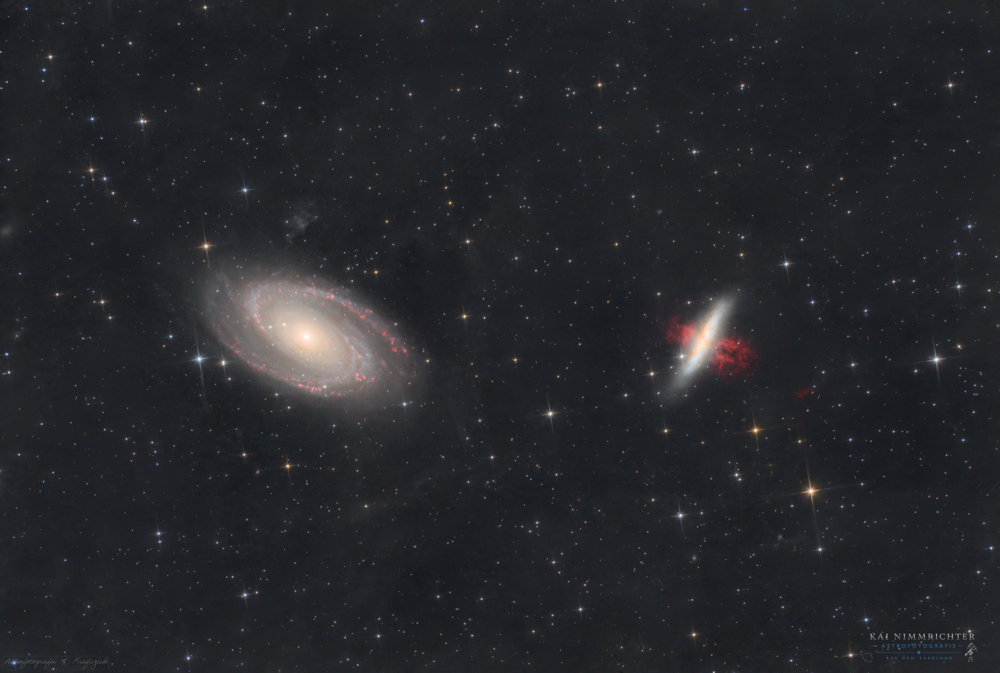

M81 & M82 – Galaxienpaar im Großen Bären
Das faszinierende Galaxienpaar im Sternbild Großer Bär zwei Welten, die sich gegenseitig beeinflussen.

Gemeinsam mit meinem Astrofotografie-Kollegen und Freund Bryan Krafczick haben wir dieses Projekt umgesetzt. Wir hätten gerne deutlich mehr Belichtungszeit gesammelt, doch das Wetter hat wie so oft nicht mitgespielt. Die Aufnahme war für mich besonders spannend, weil zwei unterschiedliche Setups zusammengebracht werden mussten technisch eine echte Herausforderung und gleichzeitig mit spürbarer Aufregung verbunden.
Die Galaxien Messier 81 und Messier 82 im Sternbild Großer Bär. M81, besser bekannt als Bodes Galaxie, ist eine beeindruckende Spiralgalaxie mit einer scheinbaren Helligkeit von etwa 7,0 mag. Obwohl sie zu den helleren Galaxien des Nordhimmels zählt, erscheint sie vergleichsweise klein. Das liegt an ihrer Entfernung von rund 12 Millionen Lichtjahren etwa viermal so weit entfernt wie der Andromedanebel.
Unweit davon befindet sich Messier 82, die bekannte Zigarrengalaxie. Mit einer scheinbaren Helligkeit von 8,6 mag gehört auch sie zu den auffälligen Galaxien am Nachthimmel. Wissenschaftler gehen davon aus, dass es sich ursprünglich um eine Balkenspiralgalaxie handelt, deren Struktur durch die gravitative Wechselwirkung mit M81 stark beeinflusst wurde.
Vor rund 500 Millionen Jahren kamen sich beide Galaxien sehr nahe. Diese Begegnung löste in M82 eine außergewöhnlich intensive Phase der Sternentstehung aus, die bis heute anhält. Solche sogenannten Starburst-Galaxien produzieren Sterne in einem enormen Tempo. Die zahlreichen Supernovaexplosionen treiben gewaltige Mengen an Gas aus dem Zentrum der Galaxie hinaus und erzeugen die markanten Ausströmungen, die auf tiefen Aufnahmen sichtbar werden.
Neben ihrer spektakulären Erscheinung ist M82 auch wissenschaftlich von großem Interesse. In einem ihrer Sternhaufen befindet sich die ultraleuchtkräftige Röntgenquelle M82 X-1, hinter der sich vermutlich ein Schwarzes Loch mittlerer Masse mit etwa 415 Sonnenmassen verbirgt. Darüber hinaus wurde 2014 mit M82 X-2 eine weitere außergewöhnliche Röntgenquelle entdeckt, die von einem Röntgenpulsar erzeugt wird.
Die Kombination aus der majestätischen Spiralstruktur von M81 und den dramatischen Gasausströmungen von M82 macht dieses Galaxienpaar zu einem der eindrucksvollsten Anblicke im Universum und zu einem ganz besonderen Projekt für uns.